1 Überblick
Im Oktober 2002 startete das OpenOffice.org Marketing Projekt in Zusammenarbeit mit den Sprachprojekten die erste Anwenderumfrage zum freien Office Paket und zum OpenOffice.org Open Source Projekt. Diese Auswertung basiert auf einem Auszug der Antworten vom 20.01. 2003 für den deutschen Sprachraum. (Alle Antworten wurden nach der Muttersprache „deutsch“ gefiltert).
Bemerkenswert ist der hohe Anteil deutschsprachiger Nutzer von ca. 25% am Gesamtergebnis. Dieser lässt sich sicher auf den hohen Bekanntheitsgrad des Projektes in Deutschland zurückführen. Schließlich basiert OpenOffice.org auf dem in Hamburg ins Leben gerufenen StarOffice.
Die Verteilung der Antworten unterscheidet sich bis auf wenige Details nur unwesentlich von den internationalen Ergebnissen. So arbeitet der typische OpenOffice.org-Anwender mit seinem Computer zu Hause unter Windows oder Linux. Er benutzt vorrangig Writer und Calc. Geschätzt wird an OpenOffice.org, dass es kostenlos und OpenSource ist. Auch die einfache Bedienbarkeit sowie der gute Import / Export verschiedener Datenformate sind hoch angesehen. Gleichzeitig wird aber eine bessere Kompatibilität zu MS-Office gewünscht. Auch an einer besseren Datenbankintegration, kürzeren Ladezeiten und einem eigenen Groupwaremodul sollte gearbeitet werden. Nach Meinung der Anwender soll am intensivsten an einem Makrorekorder bzw. dem PDF-Import gearbeitet werden.
Dass OpenOffice.org gleichzeitig für eine OpenSource Gemeinschaft steht, an der man sich beteiligen kann, ist den meisten Anwendern bekannt. Viele sind auch bereit, zu helfen (über 40% möchten bei Tests mitwirken).
Im Gegensatz zu den internationalen Ergebnissen, wurde OpenOffice.org im deutschen Raum sehr stark durch Zeitschriften und weniger durch das Internet bekannt. Viele Computermagazine haben OpenOffice.org in ihre CD-Beilagen aufgenommen. Es wurden Sonderhefte oder Artikelreihen zu OpenOffice.org veröffentlicht.
Die Umfrage wurden über zwei leicht unterschiedliche Webformulare durchgeführt. Während eine deutsche Umfrage (http://oosurvey.gratismania.ro/user/de.php) über die Webseite des deutschsprachigen Projektes erreichbar war, ist die internationale Seite (http://oosurvey.gratismania.ro/user/index.php) die Seite, auf die ein neuer Nutzer bei der Registrierung von OpenOffice.org geleitet wird. Die internationalen Ergebnisse enthalten daher eher Daten von neuen Nutzern. An Stellen, bei denen es Abweichungen zu den Ergebnissen des deutschen Formulars gibt, wird darauf im Text eingegangen. Diagramme basieren immer auf den zusammengefassten Daten beider Umfragen.
2 Allgemeine Daten
Mit total 18328 Antworten (ca. 25% aller Antworten) bilden deutschsprachige Nutzer einen beachtlichen Anteil an der Gesamtnutzerzahl. Innerhalb des deutschen Sprachraumes ist OpenOffice.org wiederum in Deutschland am weitesten verbreitet. Dies ist sicher durch die deutschen Wurzeln des Projektes begründet. Gleichzeitig zeigt es aber auch, dass in anderen Ländern mehr Öffentlichkeitsarbeit notwendig ist.
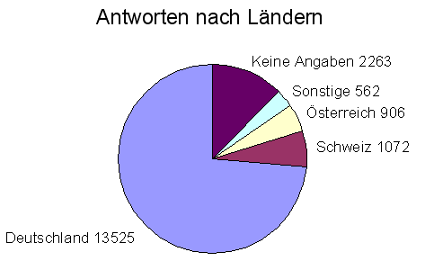
Die
Verteilung unterscheidet sich kaum zwischen internationaler und
deutscher Umfrage.
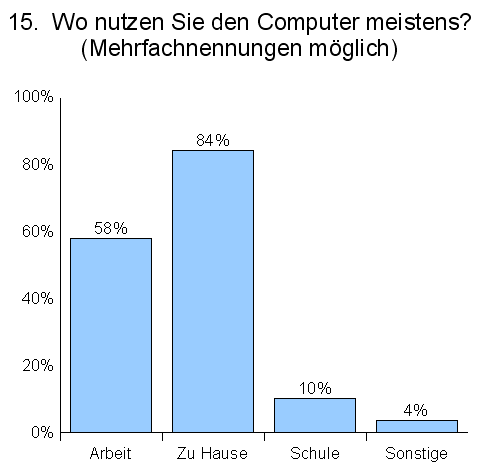
Der
typische OpenOffice.org Anwender benutzt seinen Computer zu Hause
oder am Arbeitsplatz. Relativ gering ist der Anteil der schulischen
Nutzung. In der internationalen Umfrage ist die Nutzung am
Arbeitsplatz um ca. 10% geringer. Das zeigt, dass neue Anwender eher
im Heimbereich gewonnen wurden.
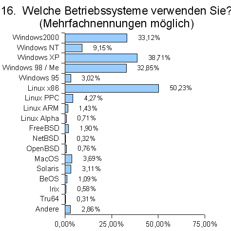
Ein,
mit über 50%, hoher Anteil der Anwender benutzt Linux.
Gleichzeitig benutzen aber fast alle Anwender eine oder mehrere
Versionen von Windows. Die Anwender benutzen offenbar verschiedene
Betriebssysteme nebeneinander, kennen sich sowohl mit Linux als auch
mit Windows aus.
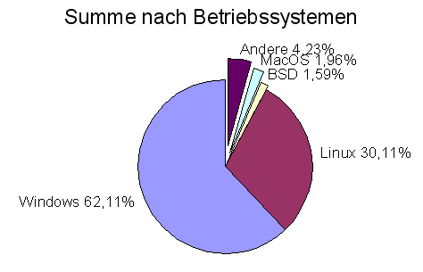
Summiert
man die Betriebssysteme, zeigt sich, dass Windows als Betriebssystem
vorherrscht. Der Windowsanteil ist in den zusammengefassten
Umfrageergebnissen um ca. 8 Prozent höher. Neue Anwender
arbeiten anscheinend eher mit Windows. Die geringe Anzahl von
Macintosh Systemen dürfte an einer fehlenden deutschen Version
für MacOS liegen.
Hohe Bekanntheit hat OpenOffice.org im deutschsprachigen Raum durch Zeitschriften erlangt. Erst an zweiter Stelle wird das Internet genannt. Die dritte Informationsquelle sind Freunde.
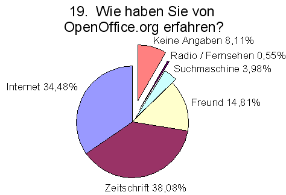
Diese
Verteilung hat sich im Vergleich zur deutschen Umfrage zu Gunsten der
Zeitschriften (+13%) und der Kommunikation unter Freunden (+7 %)
verschoben. Auch die internationalen Ergebnisse deuten eher auf das
Internet (38%) als Informationsquelle.
3 Nutzung von OpenOffice.org
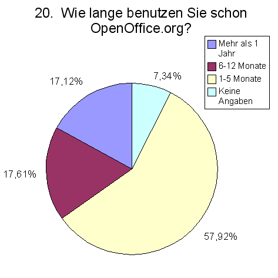
Die
Antworten auf Frage „Wie lange benutzen Sie schon
OpenOffice.org“ zeigen für die deutsche Umfrage eine
Verteilung, die um einiges von der Verteilung der Gesamtumfrage
abweicht. Wurde die deutsche Umfrage zu etwa gleichen Teilen von
Anwendern genutzt, die lang- (30,7%), mittel- (34,9%) bzw. erst
kurzfristig (30,6%) mit OpenOffice.org arbeiten, beträgt der
Anteil neuer Anwender im Gesamtergebnis 57%. Das zeigt, dass die
internationale Umfrage zum Großteil Anwender erreicht hat, die
OpenOffice.org neu registrieren wollten.
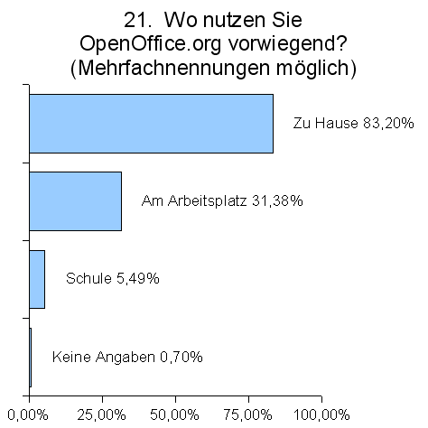
Benutzt
wird OpenOffice.org vorwiegend zu Hause. Knapp ein Drittel der
Befragten setzt OpenOffice.org
auch am Arbeitsplatz ein. Neue Nutzer wurden aber eher
am privaten Computer erreicht.
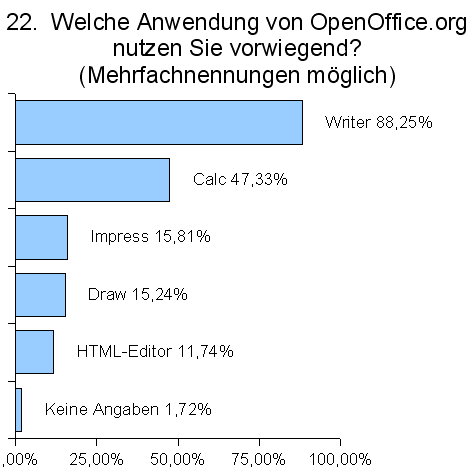
Die
meistgenutzte Anwendung des Officepaketes ist die Textverarbeitung
Writer. Ca. 50% der Nutzer geben an, die Tabellenkalkulation Calc
häufig einzusetzen. Die anderen Bestandteile von OpenOffice.org
werden mit 10% - 15% deutlich weniger genutzt. Interessant ist, dass
neue Anwender sich eher mit Draw (15,24%) und dem HTML-Editor
(11,74%) befassen als langjährige Nutzer (12,87% bzw. 7,38%).
4 Bewertung und Wünsche zur Software
Auf die Frage, was von den Anwendern als störend empfunden wurde, trafen viele verschiedenen Antworten ein. Aufgrund der hohen Anzahl der Antworten ist nur Analyse von Stichproben möglich. Zu folgenden Bereichen wurde häufig Kritik geäußert:
lange Start- / Ladezeiten
mangelnde Integration und Qualität der Rechtschreibprüfung
keine 100%ige Kompatibilität bei MS-Office Dateien
fehlende Datenbank, Mailclient und Kalender
fehlende Anleitungen oder Tutorials
unübersichtliche API-Dokumentation, Probleme bei der Makroprogrammierung
Ähnlich problematisch ist die Auswertung der Frage, was an OpenOffice.org am meisten geschätzt wird. Hier eine Auswahl an Antworten:
kostenlose Software
einfach bedienbar
auf verschiedenen Betriebssystemen verfügbar
dass es OpenSource ist, der OpenSource Gedanke
kompatibel mit MS-Office und anderen Dateiformaten
dass es nicht von Microsoft ist
XML Dateiformat, Stylist, Formeleditor
Auf die Frage, welche neuen Komponenten gewünscht werden, wurde unter anderem geantwortet:
eigene Datenbank, bessere Integration von externen Datenbanken
PDF Export
Groupware (Mail, Kalender)
bessere Rechtschreibprüfung
Vorlagen und Beispieldokumente, Tutorials
eigene / bessere Schriftarten
Bildbearbeitung für Rastergrafiken
Makrorekorder, Makrokonverter VBA<->OOoBasic
bessere Dokumentation und Onlinehilfe
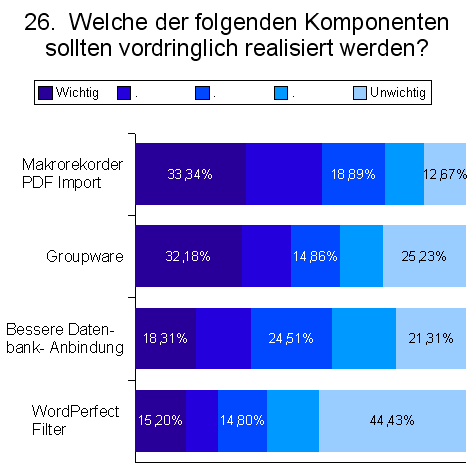
Der
Großteil der Anwender befürwortet die vordringliche
Realisierung des Makrorekorders und des PDF-Imports (leider wurden
beide Features in einer Antwortmöglichkeit zusammengefasst).
Danach folgen Groupware, Datenbankanbindung und Filter für
Wordperfect. Diese Verteilung ist insofern interessant, da auf die
vorhergehende Frage, welche Komponenten gewünscht werden, eher
mit Groupware oder Datenbanken geantwortet wurde.
OpenOffice.org existiert bereits in nahezu allen Sprachen, für die von den Anwendern eine Übersetzung gewünscht wird. Naturgemäß ist bei einer Umfrage unter deutschsprachigen Anwendern die Bandbreite der gewünschten Sprachen relativ gering. Dass allerdings Portierungen nach Bayrisch, Hessisch, Sächsich, Plattdeutsch, Schweizerdeutsch, Verwaltungsdeutsch, Latein oder Klingon in Angriff genommen werden, ist eher unwahrscheinlich.
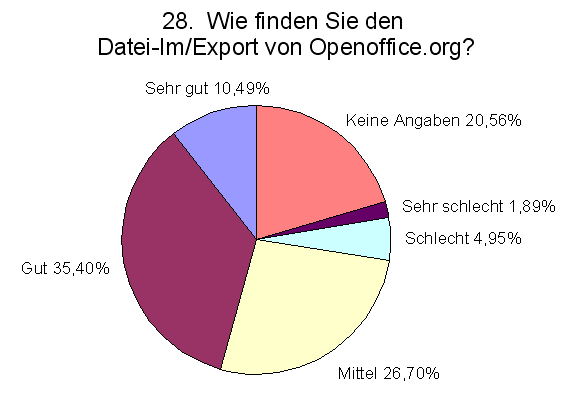
Ca.
45% der Anwender geben den Import- und Export- Filtern von
OpenOffice.org eine sehr gute oder gute Wertung. Weitere 26%
empfinden die Filterfunktionen als mittelmäßig. Schlecht oder
sehr schlecht arbeiten die Filter nur für knapp 7% der Anwender.
5 Fragen zum OpenOffice.org Projekt
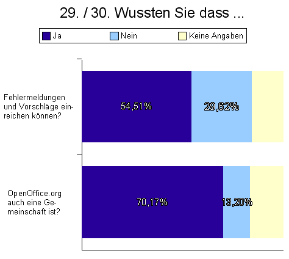
Während
ca. 70% der Anwender wissen, dass es sich bei OpenOffice.org auch um
eine Gemeinschaft handelt, ist nur ca. 55% bekannt, dass Fehler und
Vorschläge direkt beim Projekt eingereicht werden können.
Hier ist sicher noch Arbeit notwendig, um diesen Prozess bekannter
und vor allem einfacher zu gestalten.
Über 40% der Anwender ist bereit bei Tests mitzuhelfen. Ca. 15% können sich vorstellen, im Bereich der Übersetzung bzw. Werbung aktiv zu werden.
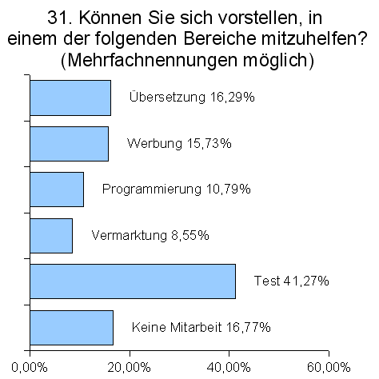
Sollte
es möglich sein, diese Anwender tatsächlich für eine
Mitarbeit zu gewinnen, hieße das allein für das
deutschsprachige Projekt ein Zuwachs von 7.200 neuen Mitgliedern. Das
ist mit Sicherheit ein großer Gewinn für das Projekt,
stellt aber gleichzeitig eine sehr hohe Anforderung an die
Projektorganisation dar.
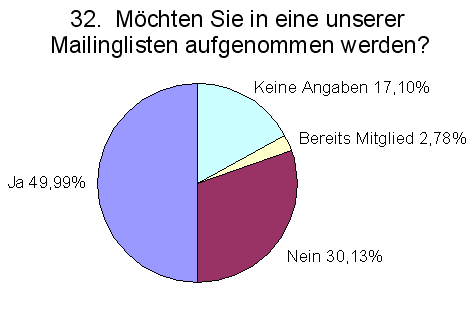
Dass
es sich hierbei größtenteils um neue Mitarbeiter handeln
würde, zeigt die relativ geringe Anzahl von Anwendern, die
bereits Mitglieder einer OpenOffice.org-Mailingliste sind. Während
weniger als 3% bereits in einer Mailingliste eingeschrieben sind,
möchten 50% in den Mailverkehr des Projektes eingebunden werden.